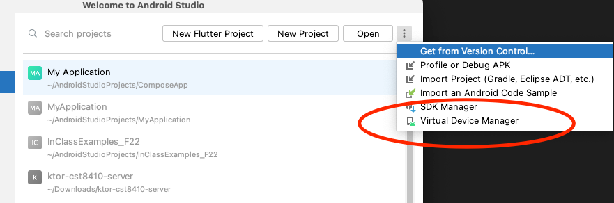
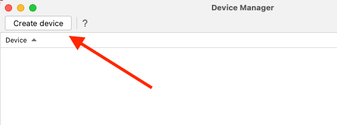
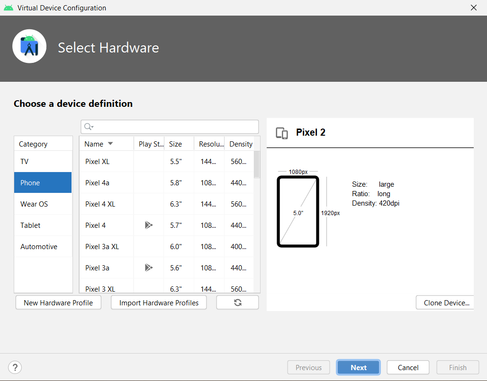
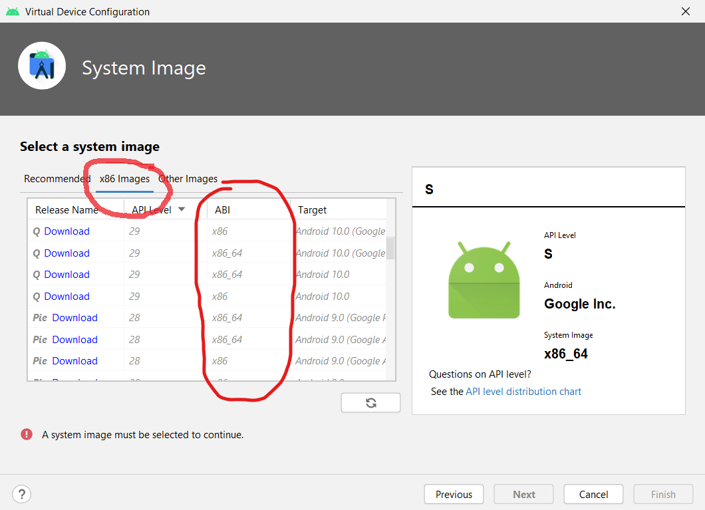
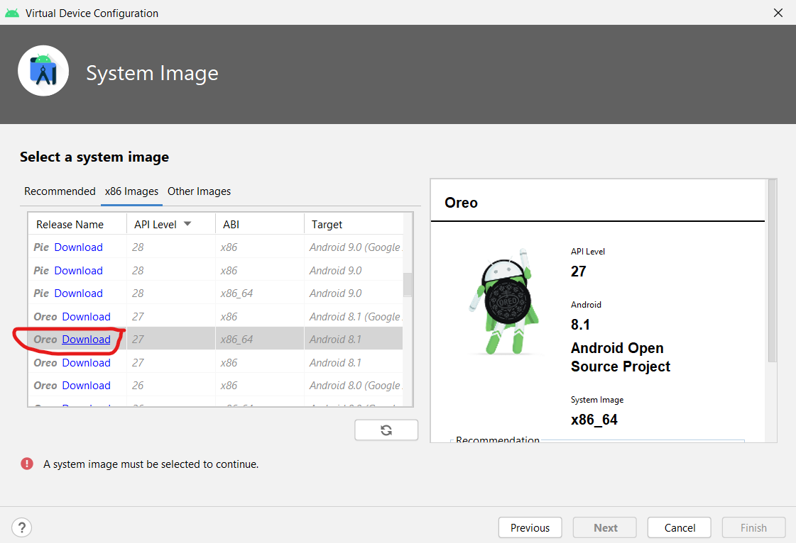
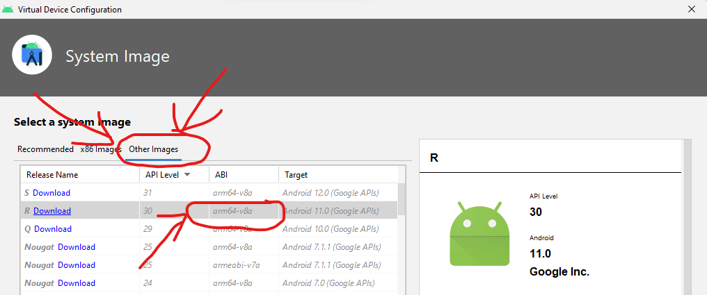

Android typically runs on devices that use an ARM processor. These processors are very energy efficient, although slower than normal desktop processors. Modern mobile devices have between 4 and 8 cores, and use a 64-bit architecture meaning that they can have more than 4GB of memory. They typically have 4 cores for low-energy computation that are slower, and 4 cores for high-performance computation that use more energy. The phone will switch between these cores as needed.
Intel made a version of mobile processor called the ATOM processor, using the x86 architecture. They failed to compete against ARM devices and have since stopped making the ATOM processor. However, you will be using the x86 version of Android for simulating an Android device on your home computer (Laptop/Desktop). Your computers at home use a 64-bit architecture, so make sure to use the x86_64 version of Android, which we'll cover later today.
Apple has recently stopped using Intel processors and have started using their own M1 processor, which uses the ARM64 processor. It's a 64-bit version of an ARM processor, with some customizations for Apple devices. It is possible to get an Apple version of the emulator, but it's not officially supported yet.
You can also use your own Android device for running your programs. You must enable Developer Options on your device, and then plug it in to your computer using a USB cable. Instructions to do this can be found here: Android device instructions
Summary: Android runs on several processor architectures. You should use the x86_64 architecture for simulating Android devices on your computer. Actual Android phones and tablets use the ARM64 architecture.
There are currently 33 different versions of Android. Each version of Android adds some new features that are not included in previous versions. If you want to use some feature that was introduced in version 16, then your application will only work on phones that have version or newer. In this course, we will use Android version 27 (called Oreo, or Android 8.1).
On the Android Studio welcome window, click on the "Configure" button at the bottom right. Select the "Virtual Device Manager" option from the menu:

We want to create an Android virtual machine on our computer to run the applications we will be making this semester. This will use your laptop to simulate a phone or tablet. Once you see this window, click "Create Virtual Device"

The first step in creating a virtual device is choosing which hardware to simulate on your computer. Just pick one of the phones in the list and click "Next":

On the next screen, notice that there are 3 tabs: Recommended, x86 Images, and Other images. Click on the "x86 Images" tab and see the list:

Your laptop has a 64 bit processor, so you should not use an image that has x86. Next, click on the "Other images" tab. Notice there are versions of Android for arm64-v8a, and armeabi-v7a. The arm64-v8a are images for Android phones that have a 64-bit processor. The armeabi-v7a images are for phones that use a 32-bit ARM processor.
Go back to the x86 Images tab, and find Oreo, API level 27, x86_64. Before you create the device, you will have to download that version of Android to your computer. Click on the Download link:

This will download the 64-bit version of Android for the Intel x86 processor, which is most likely what you have on your computer. This also works for AMD processors.
If you have an Apple computer with the M1 processor, then make sure you choose an arm64-v8a image:
Then you should create a virtual device that uses the arm64-v8 architecture, which is what the M1 processor is. It will appear in the "Recommended" tab:

There are two types of processors that can be used: Intel and ARM. They each have a 32-bit version, and 64-bit version:
Intel 32 bit: x86
Intel 64 bit: x86_64
ARM 32 bit: armv7
ARM 64 bit: arm64-v8
Most of you should only use x86_64 since you have Intel processors. Some of you will might have a new Macintosh computer with an M1 processor, in which case you should use arm64-v8.
Once you have created an Android emulator, please continue with the next module.